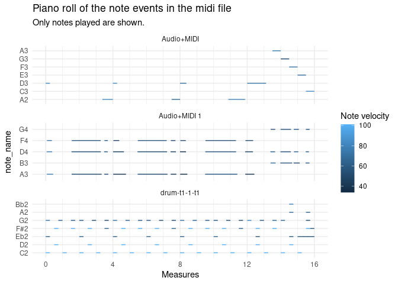

Work in progress!
♪ ♫ ♩ ♬ ♪ ♫ ♩ ♬ ♪ ♫ ♩ ♬ ♪ ♫ ♩ ♬ ♪ ♫ ♩ ♬ ♪ ♫ ♩ ♬ ♪ ♫ ♩ ♬ ♪ ♫ ♩ ♬ ♪ ♫ ♩ ♬
The goal of pyramidi is to read in dataframes generated by the python package miditapyr. These dataframes contain midi data. Then the midi information (one line per event) can be translated into a wide format (one line per note). This facilitates plotting piano roll plots. These dataframes can then be written back to midi files (again using miditapyr).
Thus you can manipulate these dataframes at all steps and write midi files from R. You need to make sure yourself that the midi files you write can be understood by your softsynth; but mido (used by miditapyr) already catches some of the possible inconsistencies.
I started to write these packages quite some time ago. They are sometimes not very well designed. For now miditapyr only contains one module with functions. And the functionality of pyramidi is quite limited and necessitates a lot of manual intermediate steps. But the loose structure allows you to generate & manipulate midi data on many different levels.
Installation
You can install pyramidi from github with:
## install remotes package if it's not already
if (!requireNamespace("remotes", quietly = TRUE)) {
install.packages("remotes")
}
## install dev version of rtweettree from github
remotes::install_github("UrsWilke/pyramidi")The python package miditapyr also needs to be installed via
in your python environment used by reticulate.
But if everything works as it should 🤞😅, miditapyr is automatically installed if you install pyramidi, as soon as you access the module for the first time.
Otherwise, you can also install it in your reticulate python environment with the included helper function:
pyramidi::install_miditapyr()Basic usage
Extract midi file information into dataframe
midi_file_str <- system.file("extdata", "test_midi_file.mid", package = "pyramidi")
midifile <- mido$MidiFile(midi_file_str)
ticks_per_beat <- midifile$ticks_per_beatNow we can load the information of the midifile into a dataframe:
dfc = miditapyr$midi_to_df(midifile)
head(dfc, 20)
#> i_track meta msg
#> 1 0 TRUE track_name, drum-t1-1-t1, 0
#> 2 0 FALSE note_on, 0, 43, 72, 9
#> 3 0 FALSE note_on, 0, 39, 64, 9
#> 4 0 FALSE note_on, 0, 36, 101, 9
#> 5 0 TRUE set_tempo, 666666, 0
#> 6 0 TRUE time_signature, 4, 4, 24, 8, 0
#> 7 0 FALSE note_off, 240, 43, 72, 9
#> 8 0 FALSE note_off, 0, 39, 64, 9
#> 9 0 FALSE note_off, 0, 36, 101, 9
#> 10 0 FALSE note_on, 240, 42, 101, 9
#> 11 0 FALSE note_on, 0, 38, 101, 9
#> 12 0 FALSE note_on, 240, 43, 64, 9
#> 13 0 FALSE note_off, 0, 42, 101, 9
#> 14 0 FALSE note_off, 0, 38, 101, 9
#> 15 0 FALSE note_off, 240, 43, 64, 9
#> 16 0 FALSE note_on, 0, 36, 101, 9
#> 17 0 FALSE note_off, 240, 36, 101, 9
#> 18 0 FALSE note_on, 240, 43, 60, 9
#> 19 0 FALSE note_on, 0, 42, 101, 9
#> 20 0 FALSE note_off, 240, 43, 60, 9This dataframe contains the columns of the track index i_track, meta (whether the midi event is a note event), and msg containing named lists of further midi event information.
The MidiFile() function of mido also yields the ticks_per_beat of the file:
ticks_per_beat
#> [1] 960The miditapyr$tidy_df() function transforms the msg column of the dataframe to a wide format, where every new column name corresponds to the names in the lists in msg (like tidyr::unnest_wider()):
df <- miditapyr$tidy_df(dfc) %>% as_tibble()
head(df, 20)
#> # A tibble: 20 × 13
#> i_track meta type name time note velocity channel tempo numerator
#> <dbl> <lgl> <chr> <list> <dbl> <dbl> <dbl> <dbl> <dbl> <dbl>
#> 1 0 TRUE track_name <chr … 0 NaN NaN NaN NaN NaN
#> 2 0 FALSE note_on <dbl … 0 43 72 9 NaN NaN
#> 3 0 FALSE note_on <dbl … 0 39 64 9 NaN NaN
#> 4 0 FALSE note_on <dbl … 0 36 101 9 NaN NaN
#> 5 0 TRUE set_tempo <dbl … 0 NaN NaN NaN 666666 NaN
#> 6 0 TRUE time_sign… <dbl … 0 NaN NaN NaN NaN 4
#> 7 0 FALSE note_off <dbl … 240 43 72 9 NaN NaN
#> 8 0 FALSE note_off <dbl … 0 39 64 9 NaN NaN
#> 9 0 FALSE note_off <dbl … 0 36 101 9 NaN NaN
#> 10 0 FALSE note_on <dbl … 240 42 101 9 NaN NaN
#> 11 0 FALSE note_on <dbl … 0 38 101 9 NaN NaN
#> 12 0 FALSE note_on <dbl … 240 43 64 9 NaN NaN
#> 13 0 FALSE note_off <dbl … 0 42 101 9 NaN NaN
#> 14 0 FALSE note_off <dbl … 0 38 101 9 NaN NaN
#> 15 0 FALSE note_off <dbl … 240 43 64 9 NaN NaN
#> 16 0 FALSE note_on <dbl … 0 36 101 9 NaN NaN
#> 17 0 FALSE note_off <dbl … 240 36 101 9 NaN NaN
#> 18 0 FALSE note_on <dbl … 240 43 60 9 NaN NaN
#> 19 0 FALSE note_on <dbl … 0 42 101 9 NaN NaN
#> 20 0 FALSE note_off <dbl … 240 43 60 9 NaN NaN
#> # … with 3 more variables: denominator <dbl>, clocks_per_click <dbl>,
#> # notated_32nd_notes_per_beat <dbl>Except the name column this seems to be the same as
dfc %>% unnest_wider(msg)
#> # A tibble: 268 × 13
#> i_track meta type name time note velocity channel tempo numerator
#> <dbl> <lgl> <chr> <chr> <int> <int> <int> <int> <int> <int>
#> 1 0 TRUE track_na… drum-t… 0 NA NA NA NA NA
#> 2 0 FALSE note_on <NA> 0 43 72 9 NA NA
#> 3 0 FALSE note_on <NA> 0 39 64 9 NA NA
#> 4 0 FALSE note_on <NA> 0 36 101 9 NA NA
#> 5 0 TRUE set_tempo <NA> 0 NA NA NA 666666 NA
#> 6 0 TRUE time_sig… <NA> 0 NA NA NA NA 4
#> 7 0 FALSE note_off <NA> 240 43 72 9 NA NA
#> 8 0 FALSE note_off <NA> 0 39 64 9 NA NA
#> 9 0 FALSE note_off <NA> 0 36 101 9 NA NA
#> 10 0 FALSE note_on <NA> 240 42 101 9 NA NA
#> # … with 258 more rows, and 3 more variables: denominator <int>,
#> # clocks_per_click <int>, notated_32nd_notes_per_beat <int>Translate midi time information
In the midi format, time is treated as relative increments between events (measured in ticks). In order to derive the total time passed, you can use the function tab_measures():
dfm <- tab_measures(df, ticks_per_beat) %>%
# create a variable `track` with the track name (in order to have it in the plot below)
mutate(track = ifelse(purrr::map_chr(name, typeof) != "character",
list(NA_character_),
name)) %>%
unnest(cols = track) %>%
fill(track)
dfm
#> # A tibble: 268 × 19
#> i_track meta type name time note velocity channel tempo numerator
#> <dbl> <lgl> <chr> <list> <dbl> <dbl> <dbl> <dbl> <dbl> <dbl>
#> 1 0 TRUE track_name <chr … 0 NaN NaN NaN NaN NaN
#> 2 0 FALSE note_on <dbl … 0 43 72 9 NaN NaN
#> 3 0 FALSE note_on <dbl … 0 39 64 9 NaN NaN
#> 4 0 FALSE note_on <dbl … 0 36 101 9 NaN NaN
#> 5 0 TRUE set_tempo <dbl … 0 NaN NaN NaN 666666 NaN
#> 6 0 TRUE time_sign… <dbl … 0 NaN NaN NaN NaN 4
#> 7 0 FALSE note_off <dbl … 240 43 72 9 NaN NaN
#> 8 0 FALSE note_off <dbl … 0 39 64 9 NaN NaN
#> 9 0 FALSE note_off <dbl … 0 36 101 9 NaN NaN
#> 10 0 FALSE note_on <dbl … 240 42 101 9 NaN NaN
#> # … with 258 more rows, and 9 more variables: denominator <dbl>,
#> # clocks_per_click <dbl>, notated_32nd_notes_per_beat <dbl>, ticks <dbl>,
#> # t <dbl>, m <dbl>, b <dbl>, i_note <int>, track <chr>This function adds further columns:
Further processing of the midi events
You can split the dataframe in two by whether the events are meta or not:
df_meta %>% as_tibble()
#> # A tibble: 8 × 16
#> i_track meta type name time tempo numerator denominator clocks_per_click
#> <dbl> <lgl> <chr> <lis> <dbl> <dbl> <dbl> <dbl> <dbl>
#> 1 0 TRUE track… <chr… 0 NaN NaN NaN NaN
#> 2 0 TRUE set_t… <dbl… 0 666666 NaN NaN NaN
#> 3 0 TRUE time_… <dbl… 0 NaN 4 4 24
#> 4 0 TRUE end_o… <dbl… 1 NaN NaN NaN NaN
#> 5 1 TRUE track… <chr… 0 NaN NaN NaN NaN
#> 6 1 TRUE end_o… <dbl… 1 NaN NaN NaN NaN
#> 7 2 TRUE track… <chr… 0 NaN NaN NaN NaN
#> 8 2 TRUE end_o… <dbl… 1 NaN NaN NaN NaN
#> # … with 7 more variables: notated_32nd_notes_per_beat <dbl>, ticks <dbl>,
#> # t <dbl>, m <dbl>, b <dbl>, i_note <int>, track <chr>
df_notes %>% as_tibble()
#> # A tibble: 260 × 13
#> i_track meta type time note velocity channel ticks t m b
#> <dbl> <lgl> <chr> <dbl> <dbl> <dbl> <dbl> <dbl> <dbl> <dbl> <dbl>
#> 1 0 FALSE note_on 0 43 72 9 0 0 0 0
#> 2 0 FALSE note_on 0 39 64 9 0 0 0 0
#> 3 0 FALSE note_on 0 36 101 9 0 0 0 0
#> 4 0 FALSE note_off 240 43 72 9 240 0.167 0.25 1
#> 5 0 FALSE note_off 0 39 64 9 240 0.167 0.25 1
#> 6 0 FALSE note_off 0 36 101 9 240 0.167 0.25 1
#> 7 0 FALSE note_on 240 42 101 9 480 0.333 0.5 2
#> 8 0 FALSE note_on 0 38 101 9 480 0.333 0.5 2
#> 9 0 FALSE note_on 240 43 64 9 720 0.500 0.75 3
#> 10 0 FALSE note_off 0 42 101 9 720 0.500 0.75 3
#> # … with 250 more rows, and 2 more variables: i_note <int>, track <chr>Pivot note dataframe to wide
Each note in the midi file is characterized by a note_on and a note_off event. In order to generate a piano roll plot with ggplot2, we need to tidyr::pivot_wider() those events. This can be done with the function widen_events():
df_not_notes <-
df_notes %>%
dplyr::filter(!stringr::str_detect(.data$type, "^note_o[nf]f?$"))
df_notes_wide <-
df_notes %>%
dplyr::filter(stringr::str_detect(.data$type, "^note_o[nf]f?$")) %>%
# tab_measures(df_meta, df_notes, ticks_per_beat) %>%
widen_events() %>%
left_join(pyramidi::midi_defs)
#> Joining, by = "note"
df_notes_wide
#> # A tibble: 130 × 19
#> i_track meta note channel i_note track time_note_on time_note_off
#> <dbl> <lgl> <dbl> <dbl> <int> <chr> <dbl> <dbl>
#> 1 0 FALSE 43 9 1 drum-t1-1-t1 0 240
#> 2 0 FALSE 39 9 1 drum-t1-1-t1 0 0
#> 3 0 FALSE 36 9 1 drum-t1-1-t1 0 0
#> 4 0 FALSE 42 9 1 drum-t1-1-t1 240 0
#> 5 0 FALSE 38 9 1 drum-t1-1-t1 0 0
#> 6 0 FALSE 43 9 2 drum-t1-1-t1 240 240
#> 7 0 FALSE 36 9 2 drum-t1-1-t1 0 240
#> 8 0 FALSE 43 9 3 drum-t1-1-t1 240 240
#> 9 0 FALSE 42 9 2 drum-t1-1-t1 0 0
#> 10 0 FALSE 43 9 4 drum-t1-1-t1 240 240
#> # … with 120 more rows, and 11 more variables: velocity_note_on <dbl>,
#> # velocity_note_off <dbl>, ticks_note_on <dbl>, ticks_note_off <dbl>,
#> # t_note_on <dbl>, t_note_off <dbl>, m_note_on <dbl>, m_note_off <dbl>,
#> # b_note_on <dbl>, b_note_off <dbl>, note_name <fct>In the new format, the data has half the number of rows. The columns m, b, t, ticks, time and velocity are each replaced by two columns with the suffix _note_on and _note_off.
Plot the midi file information in a piano roll plot
Now we have the midi data in the right format for the piano roll plot:
df_notes_wide %>%
ggplot() +
geom_segment(
aes(
x = m_note_on,
y = note_name,
xend = m_note_off,
yend = note_name,
color = velocity_note_on
)
) +
# each midi track is printed into its own facet:
facet_wrap( ~ track,
ncol = 1,
scales = "free_y") +
guides(color=guide_colorbar(title="Note velocity")) +
labs(
title = "Piano roll of the note events in the midi file",
subtitle = "Only notes played are shown."
) +
xlab("Measures") +
scale_x_continuous(breaks = seq(0, 16, 4),
minor_breaks = 0:16) +
scale_colour_gradient() +
theme_minimal()
Manipulation of the midi data
The new format also allows to easily manipulate the midi data. For instance, let’s put the volume (called velocity in midi) of the first beat in every bar to the maximum (127), and to half of its original value otherwise:
df_notes_wide_mod <- df_notes_wide %>%
mutate(
velocity_note_on = ifelse(
# As it's a 4/4 beat, the first beat of each bar is a multiple of 4:
b_note_on %% 4 == 0,
127,
velocity_note_on / 2
)
)Let’s compare the modified value to the original one:
tibble(
old = df_notes_wide$velocity_note_on,
new = df_notes_wide_mod$velocity_note_on
)
#> # A tibble: 130 × 2
#> old new
#> <dbl> <dbl>
#> 1 72 127
#> 2 64 127
#> 3 101 127
#> 4 101 50.5
#> 5 101 50.5
#> 6 64 32
#> 7 101 127
#> 8 60 30
#> 9 101 50.5
#> 10 60 127
#> # … with 120 more rowsPivot note data frame back to long format
We can transform the wide midi data back to the long format:
df_notes_out <-
df_notes_wide %>%
select(c("i_track",
"channel", "note", "i_note"), matches("_note_o[nf]f?$")) %>%
pivot_longer(matches("_note_o[nf]f?$"),
names_to = c(".value", "type"),
names_pattern = "(.+?)_(.*)") %>%
# note events are not meta events (cf.
# https://mido.readthedocs.io/en/latest/midi_files.html?highlight=meta#meta-messages):
mutate(meta = FALSE)Join non note events
We can now add the non note events:
df_notes_out <-
df_notes_out %>%
full_join(df_meta) %>%
full_join(df_not_notes) %>%
# It is important to put the events in the right order:
arrange(i_track, ticks) %>%
group_by(i_track) %>%
# Now we can calculate the time increments between events;
# The first event of each track is set to 0:
mutate(time = ticks - lag(ticks) %>% {.[1] = 0; .}) %>%
ungroup()
#> Joining, by = c("i_track", "i_note", "type", "time", "ticks", "t", "m", "b", "meta")
#> Joining, by = c("i_track", "channel", "note", "i_note", "type", "time", "velocity", "ticks", "t", "m", "b", "meta", "track")
df_notes_out
#> # A tibble: 268 × 19
#> i_track channel note i_note type time velocity ticks t m b
#> <dbl> <dbl> <dbl> <int> <chr> <dbl> <dbl> <dbl> <dbl> <dbl> <dbl>
#> 1 0 9 43 1 note_on 0 72 0 0 0 0
#> 2 0 9 39 1 note_on 0 64 0 0 0 0
#> 3 0 9 36 1 note_on 0 101 0 0 0 0
#> 4 0 NA NA 0 track_na… 0 NA 0 0 0 0
#> 5 0 NA NA 0 set_tempo 0 NA 0 0 0 0
#> 6 0 NA NA 0 time_sig… 0 NA 0 0 0 0
#> 7 0 9 43 1 note_off 240 72 240 0.167 0.25 1
#> 8 0 9 39 1 note_off 0 64 240 0.167 0.25 1
#> 9 0 9 36 1 note_off 0 101 240 0.167 0.25 1
#> 10 0 9 42 1 note_on 240 101 480 0.333 0.5 2
#> # … with 258 more rows, and 8 more variables: meta <lgl>, name <list>,
#> # tempo <dbl>, numerator <dbl>, denominator <dbl>, clocks_per_click <dbl>,
#> # notated_32nd_notes_per_beat <dbl>, track <chr>The time value in midi format is given by the number of ticks passed between events.
Write midi dataframe back to a midi file
Now we can transform the data back to a dataframe of the same format as the one we got with miditapyr$midi_to_df():
dfc2 <-
df_notes_out %>%
# For midi export the new columns are removed:
select(names(df)) %>%
# When reticulate converts R dataframes to pandas, there are complications
# with character columns containing missing values.
# repair_reticulate_conversion = TRUE, repairs that in the miditapyr python
# code:
miditapyr$compact_df(repair_reticulate_conversion = TRUE)
dfc2 %>% as_tibble()
#> # A tibble: 268 × 3
#> i_track meta msg
#> <dbl> <lgl> <list>
#> 1 0 FALSE <named list [5]>
#> 2 0 FALSE <named list [5]>
#> 3 0 FALSE <named list [5]>
#> 4 0 TRUE <named list [3]>
#> 5 0 TRUE <named list [3]>
#> 6 0 TRUE <named list [6]>
#> 7 0 FALSE <named list [5]>
#> 8 0 FALSE <named list [5]>
#> 9 0 FALSE <named list [5]>
#> 10 0 FALSE <named list [5]>
#> # … with 258 more rowsAnd we can save it back to a midi file:
dfc2 %>%
miditapyr$df_to_midi(ticks_per_beat,
"test.mid")R packages used
This package stands on the shoulders of giants. It was only possible thanks to the following libraries:
- base (R Core Team 2021)
- pkgdown (Wickham and Hesselberth 2020)
- usethis (Wickham, Bryan, and Barrett 2021)
- dplyr (Wickham et al. 2021)
- forcats (Wickham 2021a)
- tibble (Müller and Wickham 2021)
- tidyr (Wickham 2021c)
- pichor (Andersen 2021)
- rvest (Wickham 2021b)
- tidyverse (Wickham et al. 2019)
- reticulate (Ushey, Allaire, and Tang 2021)
- purrr (Henry and Wickham 2020)
- stringr (Wickham 2019)
- ggplot2 (Wickham 2016)
- zeallot (Teetor 2018)
- magrittr (Bache and Wickham 2020)
- rlang (Henry and Wickham 2021)
- knitr (Xie 2014)
- rmarkdown (Xie, Dervieux, and Riederer 2020)
- tuneR (Ligges et al. 2018)
- testthat (Wickham 2011)
- covr (Hester 2020)
References
Andersen, Mikkel Meyer. 2021. Pichor: Piano Chords in r.
Bache, Stefan Milton, and Hadley Wickham. 2020. Magrittr: A Forward-Pipe Operator for r. https://CRAN.R-project.org/package=magrittr.
Henry, Lionel, and Hadley Wickham. 2020. Purrr: Functional Programming Tools. https://CRAN.R-project.org/package=purrr.
———. 2021. Rlang: Functions for Base Types and Core r and ’Tidyverse’ Features. https://CRAN.R-project.org/package=rlang.
Hester, Jim. 2020. Covr: Test Coverage for Packages. https://CRAN.R-project.org/package=covr.
Ligges, Uwe, Sebastian Krey, Olaf Mersmann, and Sarah Schnackenberg.
- tuneR: Analysis of Music and Speech. https://CRAN.R-project.org/package=tuneR.
Müller, Kirill, and Hadley Wickham. 2021. Tibble: Simple Data Frames. https://CRAN.R-project.org/package=tibble.
R Core Team. 2021. R: A Language and Environment for Statistical Computing. Vienna, Austria: R Foundation for Statistical Computing. https://www.R-project.org/.
Teetor, Nathan. 2018. Zeallot: Multiple, Unpacking, and Destructuring Assignment. https://CRAN.R-project.org/package=zeallot.
Ushey, Kevin, JJ Allaire, and Yuan Tang. 2021. Reticulate: Interface to ’Python’. https://CRAN.R-project.org/package=reticulate.
Wickham, Hadley. 2011. “Testthat: Get Started with Testing.” The R Journal 3: 5–10. https://journal.r-project.org/archive/2011-1/RJournal_2011-1_Wickham.pdf.
———. 2016. Ggplot2: Elegant Graphics for Data Analysis. Springer-Verlag New York. https://ggplot2.tidyverse.org.
———. 2019. Stringr: Simple, Consistent Wrappers for Common String Operations. https://CRAN.R-project.org/package=stringr.
———. 2021a. Forcats: Tools for Working with Categorical Variables (Factors). https://CRAN.R-project.org/package=forcats.
———. 2021b. Rvest: Easily Harvest (Scrape) Web Pages. https://CRAN.R-project.org/package=rvest.
———. 2021c. Tidyr: Tidy Messy Data. https://CRAN.R-project.org/package=tidyr.
Wickham, Hadley, Mara Averick, Jennifer Bryan, Winston Chang, Lucy D’Agostino McGowan, Romain François, Garrett Grolemund, et al. 2019. “Welcome to the tidyverse.” Journal of Open Source Software 4 (43): 1686. https://doi.org/10.21105/joss.01686.
Wickham, Hadley, Jennifer Bryan, and Malcolm Barrett. 2021. Usethis: Automate Package and Project Setup. https://CRAN.R-project.org/package=usethis.
Wickham, Hadley, Romain François, Lionel Henry, and Kirill Müller. 2021. Dplyr: A Grammar of Data Manipulation. https://CRAN.R-project.org/package=dplyr.
Wickham, Hadley, and Jay Hesselberth. 2020. Pkgdown: Make Static HTML Documentation for a Package. https://CRAN.R-project.org/package=pkgdown.
Xie, Yihui. 2014. “Knitr: A Comprehensive Tool for Reproducible Research in R.” In Implementing Reproducible Computational Research, edited by Victoria Stodden, Friedrich Leisch, and Roger D. Peng. Chapman; Hall/CRC. http://www.crcpress.com/product/isbn/9781466561595.
Xie, Yihui, Christophe Dervieux, and Emily Riederer. 2020. R Markdown Cookbook. Boca Raton, Florida: Chapman; Hall/CRC. https://bookdown.org/yihui/rmarkdown-cookbook.